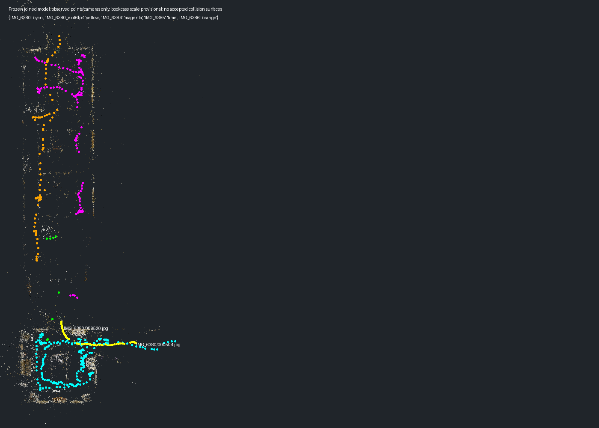
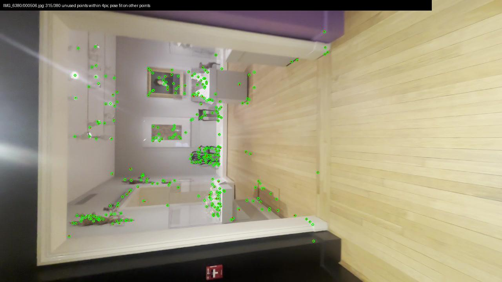
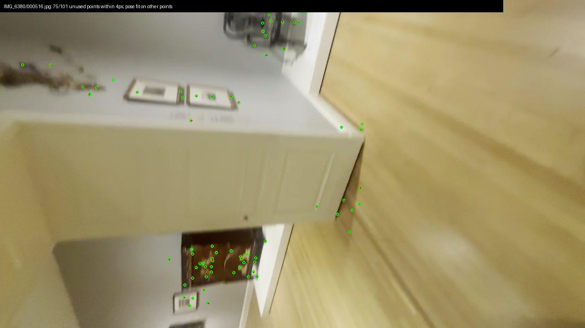
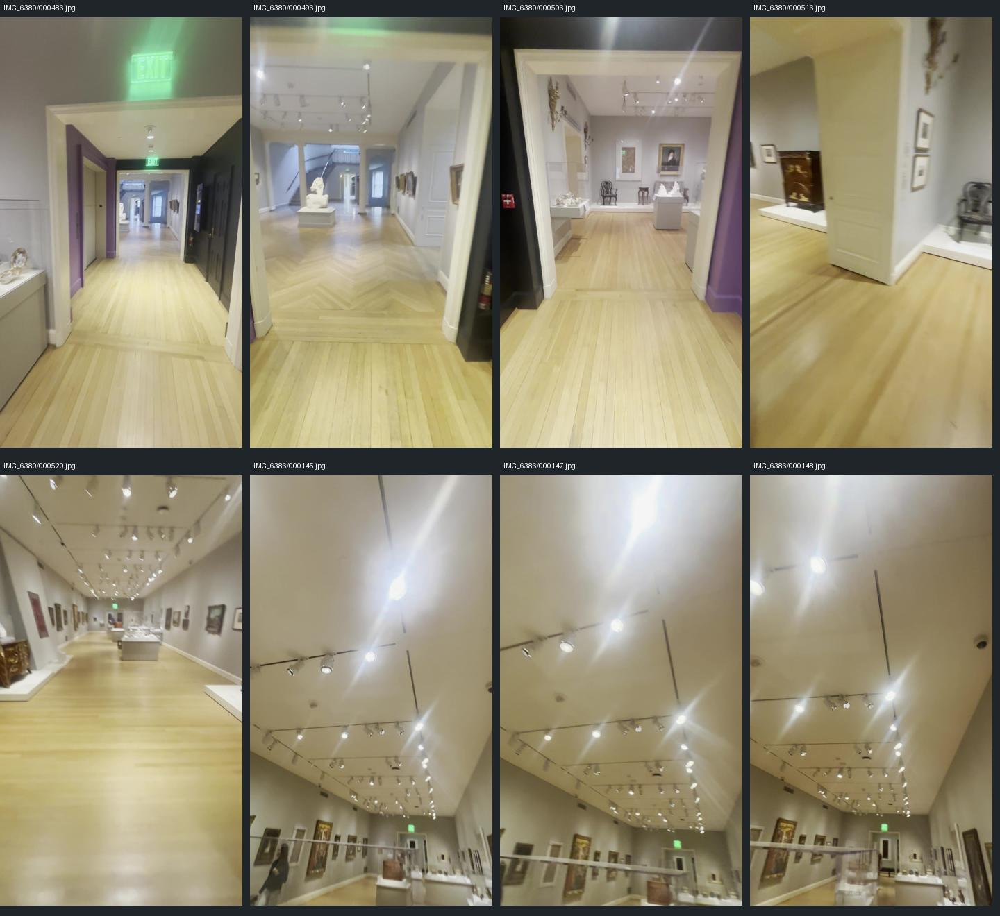
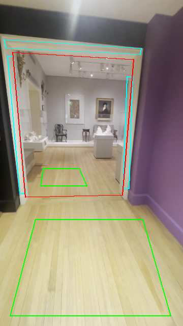
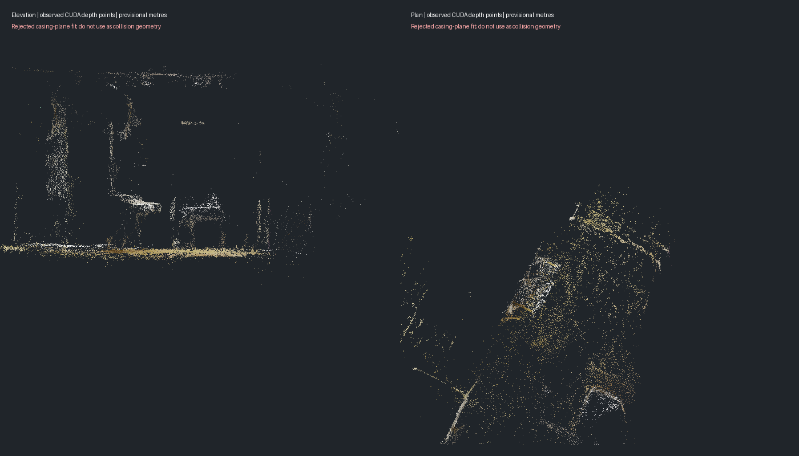

49 of 69 withheld video frames meet the existing support threshold. A stricter test fitting the pose on half the 3D points and checking the other half supports 46 of 69. These are nearby video frames, not separate capture sessions.
61-view CUDA depth produced 19,815 points. The casing-plane measurement failed: inconsistent depth and a 0.50 m provisional floor/corner discrepancy. No collision walls or playable room connection are accepted. Bookcase scale remains provisional; the flat-canvas check found no supported scale views. No paid generation this tick.






Per-frame audit · Rejected geometry measurements · Sources and hashes
Repository check passed. Shell playtest failed eight layout/pixel/timing checks on existing runtime files; its isolated-display retry could not open X11. Runtime and 3D Viewer were not edited.